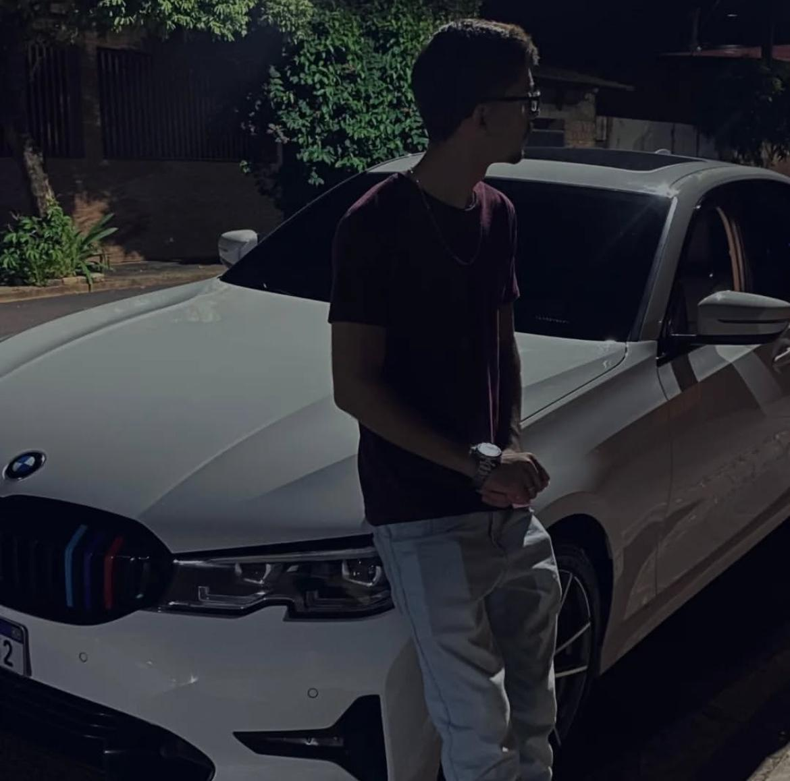
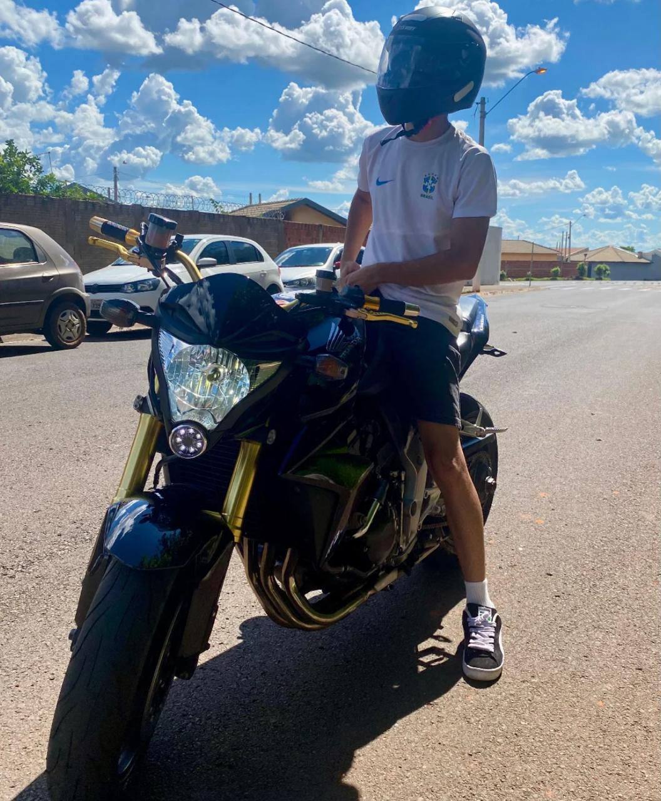

lucas_boscheto 
"amor da vida da Rapha"



1.943
r_a_p_h_a_s
O homem mais lindo do mundo ❤️❤️❤️❤️
r_a_p_h_a_s
Eu te amo mais que tudo na vida!!! 🥰🥰
r_a_p_h_a_s
Casa comigo, por favor.
r_a_p_h_a_s
Sorte a minha te ter. 😍😍😍😍
r_a_p_h_a_s
Cada dia mais apaixonada por você, amor! ;🔥🔥
r_a_p_h_a_s
Eu que como!!! 😂😂 ❤
Se eu pudesse congelar o tempo, seria em todos os momentos em que a gente esteve juntos, porque são nesses instantes que eu me sinto completa, feliz e com a certeza de que encontrei o amor da minha vida. 🌍


Músicas que marcaram quando você entrou na minha vida ou me lembram você.
 Prévias do Spotify
Prévias do Spotify
Contagem Regressiva
para o nível
21
0Dias
0Horas
0Minutos
0Segundos